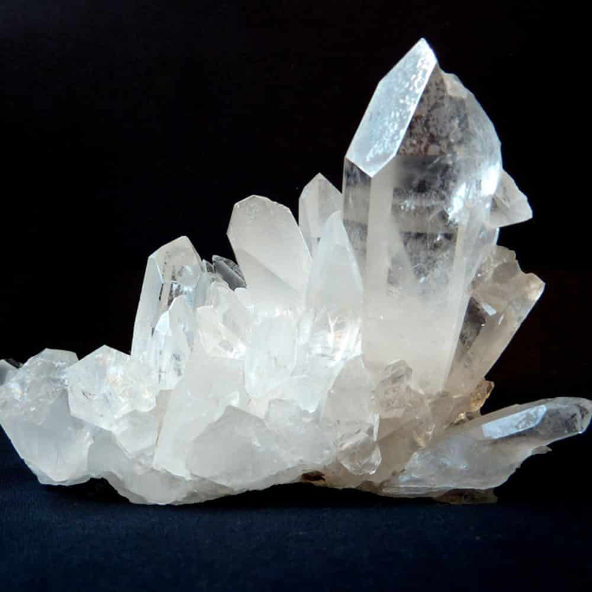
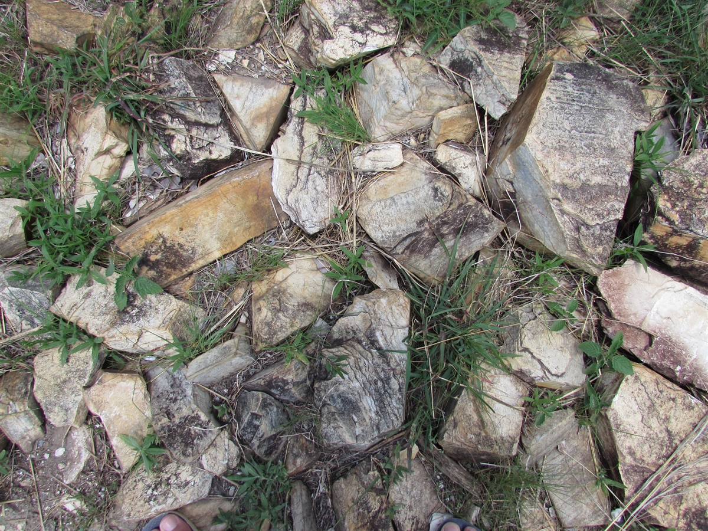
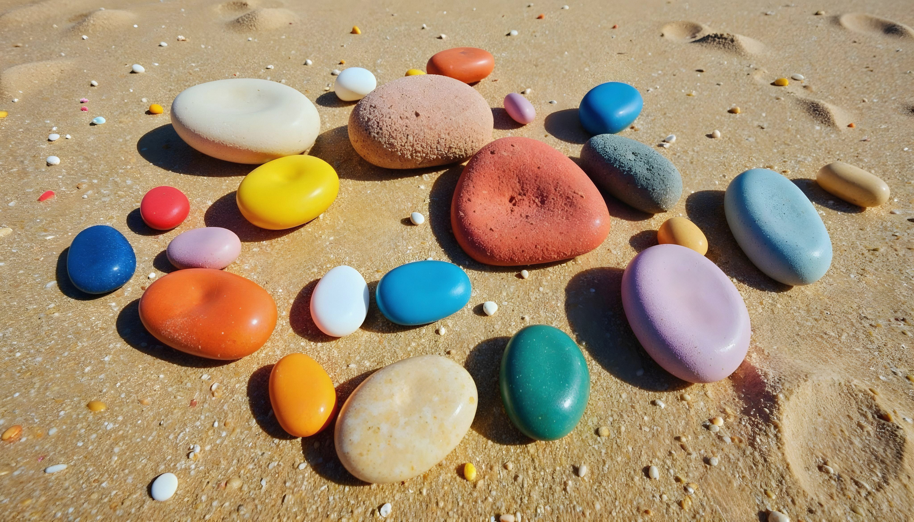
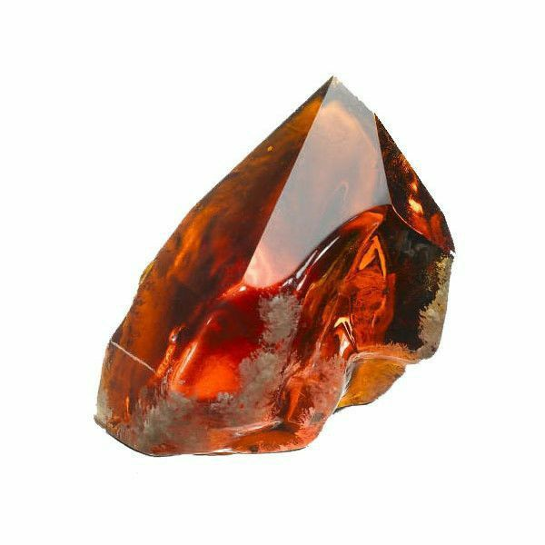

você achava que pedra era tudo igual, prepare-se para abrir a mente! O mundo das pedras é tão diverso quanto o cardápio de uma sorveteria chique. Tem pedra para todos os gostos, estilos e... humores! Aqui vai um guia divertido para você entender com qual pedra você mais se identifica.
Essa é aquela pedrinha arredondada, pequena, que cabe na palma da mão e que dá vontade de carregar no bolso. Geralmente encontrada na beira de rios ou em parquinhos de infância. Ela tem energia de “sou tranquila, pode me adotar”. É o tipo de pedra que parece dizer: “Relaxa, a vida é simples… e eu também” .
Essas são as que ocupam espaço. Pesadas, cheias de personalidade e ótimas para decoração de jardim ou, se você for mais ousado, como peso de papel estiloso. São as pedras que têm cara de quem já viu muita coisa por aí e não se abalam com nada. Trovoada? Terremoto? Pode vir! Essas pedras ficam lá… firmes e fortes.

Aqui entramos no mundo dos cristais, ametistas, quartzos rosa e turmalinas. São as pedras das pessoas que acreditam em energias, vibes, chakras e alinhamento planetário. Tem gente que carrega no bolso, coloca na cabeceira da cama e faz até mapa astral da pedra. Se você é do tipo “good vibes only”, essa é a sua turma.

Essa é aquela pedra gigante que aparece bem no meio do caminho. Literalmente. Sempre no lugar errado, no momento errado, pronta para fazer você tropeçar ou ter que chamar um guincho para remover. Ela gosta de atenção e faz questão de ser notada. Se fosse gente, seria aquele amigo que chega atrasado, mas faz uma grande entrada.

Essas são as pedras que passaram por uma transformação de salão de beleza. Pintadas à mão, com carinhas felizes, mandalas ou frases motivacionais. São as estrelas de feirinhas de artesanato e perfis do Pinterest. Se a sua vibe é "faça você mesmo" ou “sou criativo até na escolha de pedras”, essa é a sua categoria.

Ok… essa é mais rara. Tem gente que passa a vida procurando e nunca acha. Dizem que transforma metais em ouro e dá a vida eterna. Se você encontrar uma dessas, por favor, entre em contato imediatamente (prometo que divido o ouro com você).
